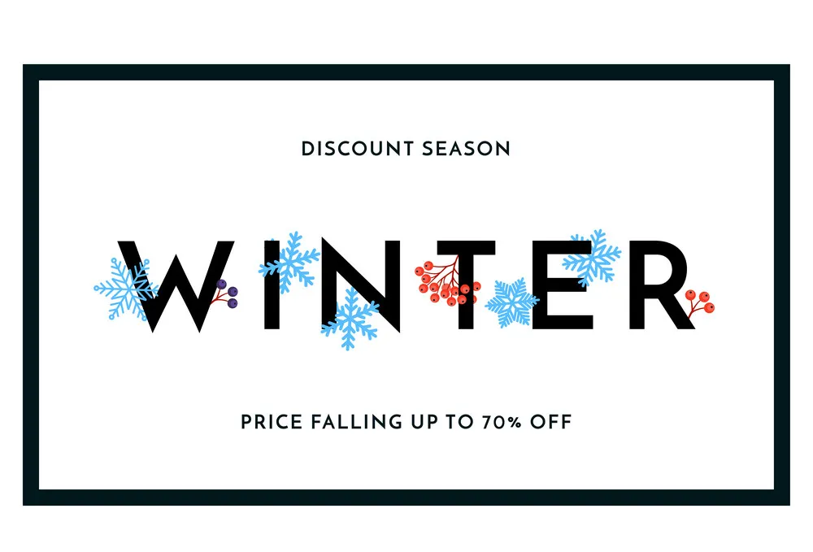

<p >
  <mat-toolbar color="primary">

      <button mat-raised-button color="primary" routerLink="/product-create">Dashboard</button>
      <button mat-raised-button color="primary" routerLink="/post-list">Product</button>
      <button mat-raised-button color="primary" routerLink="/product-list" >Add to Cart</button>

  </mat-toolbar>
  


</p>
